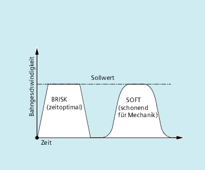

Zur Programmierung des Beschleunigungsmodus stehen folgende Teileprogrammbefehle zur Verfügung:
"BRISK, BRISKA"
Die Einzelachsen bzw. die Bahnachsen verfahren mit maximaler Beschleunigung bis zum Erreichen der programmierten Vorschubgeschwindigkeit (Beschleunigung ohne Ruckbegrenzung).
"SOFT, SOFTA"
Die Einzelachsen bzw. die Bahnachsen verfahren mit stetiger Beschleunigung bis zum Erreichen der programmierten Vorschubgeschwindigkeit (Beschleunigung mit Ruckbegrenzung).
"DRIVE, DRIVEA"
Die Einzelachsen bzw. die Bahnachsen verfahren mit maximaler Beschleunigung bis zu einer projektierten Geschwindigkeitsgrenze (MD-Einstellung!). Danach erfolgt eine Beschleunigungsreduktion (MD-Einstellung!) bis zum Erreichen der programmierten Vorschubgeschwindigkeit.

Verlauf der Bahngeschwindigkeit bei BRISK und SOFT
Verlauf der Bahngeschwindigkeit bei DRIVE
| Befehl zum Einschalten der "Beschleunigung ohne Ruckbegrenzung" für die Bahnachsen. |
| Befehl zum Einschalten der "Beschleunigung ohne Ruckbegrenzung" für Einzelachsbewegungen (JOG, JOG/INC, Positionierachse, Pendelachse, etc.). |
| Befehl zum Einschalten der "Beschleunigung mit Ruckbegrenzung" für die Bahnachsen. |
| Befehl zum Einschalten der "Beschleunigung mit Ruckbegrenzung" für Einzelachsbewegungen (JOG, JOG/INC, Positionierachse, Pendelachse, etc.). |
| Befehl zum Einschalten der reduzierten Beschleunigung oberhalb einer projektierten Geschwindigkeitsgrenze (MD35220 $MA_ACCEL_REDUCTION_SPEED_POINT) für die Bahnachsen. |
| Befehl zum Einschalten der reduzierten Beschleunigung oberhalb einer projektierten Geschwindigkeitsgrenze (MD35220 $MA_ACCEL_REDUCTION_SPEED_POINT) für Einzelachsbewegungen (JOG, JOG/INC, Positionierachse, Pendelachse, etc.). |
| Einzelachsen, für die der aufgerufene Beschleunigungsmodus gelten soll. |
Wenn in einem Teileprogramm der Beschleunigungsmodus während der Bearbeitung gewechselt wird (BRISK ↔ SOFT), dann erfolgt auch bei Bahnsteuerbetrieb am Übergang ein Satzwechsel mit Genauhalt am Satzende.
| Programmcode | |
|---|---|
| N10 G1 X… Y… F900 SOFT | |
| N20 BRISKA(AX5,AX6) | |
| ... |
| Programmcode | |
|---|---|
| N05 DRIVE | |
| N10 G1 X… Y… F1000 | |
| N20 DRIVEA (AX4, AX6) | |
| ... |
Siehe auch:
Beeinflussung der Beschleunigung bei Folgeachsen (VELOLIMA, ACCLIMA, JERKLIMA)
Aktivierung von Technologie-spezifischen Dynamikwerten (DYNNORM, DYNPOS, DYNROUGH, DYNSEMIFIN, DYNFINISH, DYNPREC)